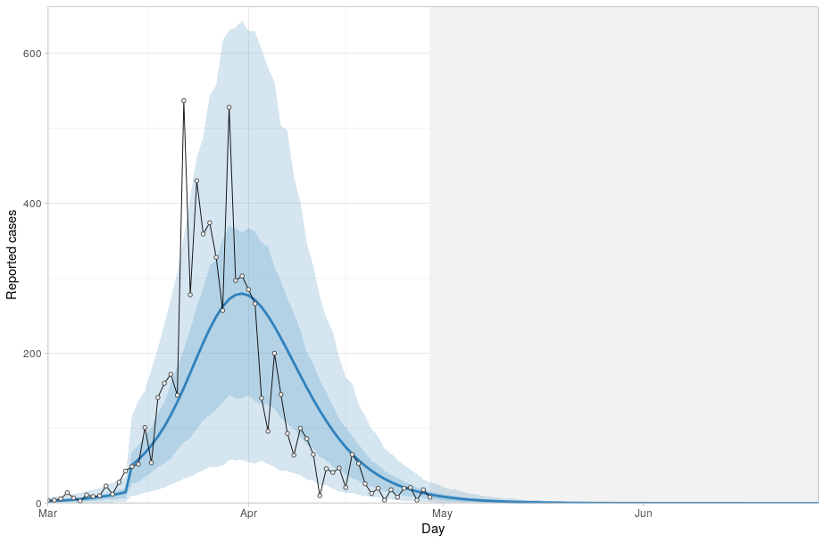
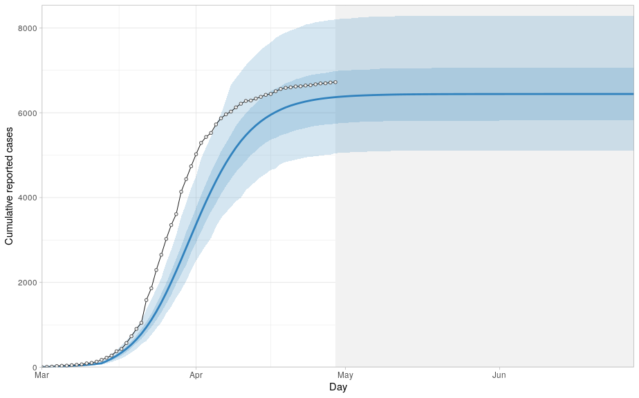

Recently there was a post on hacker news about the Sigmoid function and its relevance to that thing on the news. There's also been a paper on medRxiv about predicting the maximum amount of COVID-19 cases after reaching the peak number of new daily infections.
It's true that if you know exactly how many people, \(N\), will be infected then the cumulative number of cases will look something like a sigmoid function approaching \(N\). But the real phenomena we are seeing is a changing R0 value due to social distancing.
A group of researchers from Canada used a SEIQR model while adding a \(f(t)\) multiplier to the R0 value. The idea is that \(f(t)\) starts at 1 and decreases linearly over the time that social distancing measures are introduced. You can see their git repo here with my clone for Australian data and parameters here.
If you'd like to run the code:
git clone https://github.com/MatthewBurke1995/distancing-impact-covid-19-australia
cd distancing-impact-covid-19-australia
docker run -e PASSWORD=password --rm -p 8787:8787 -v /$(pwd):/home/rstudio/covid-distancing rocker/verse
# in browser go to 'http://localhost:8787/'
# login using username:rstudio, password:password
# In the r console: setwd("covid-distancing")
# follow readme from here
Results using Australian numbers suggest that the initial R0 was approximately 3.6, and that the final \(f(t)\) value has a mean of 0.03 with a standard deviation of 0.02 i.e. R0 after the lockdown has fallen to around 0.1.
New case count

At the current rate Australia reaches 0 new cases in mid May (according to the model anyway).
Cumulative case count
